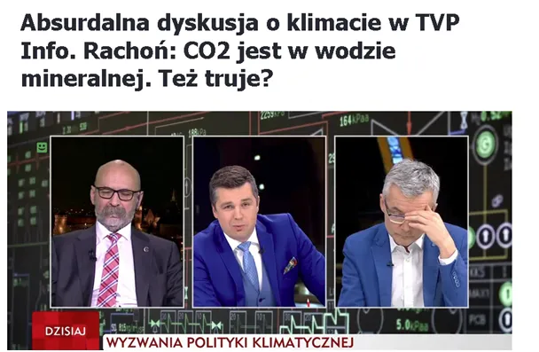
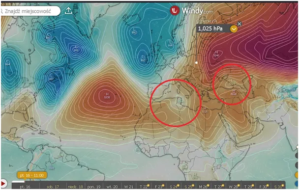

Rozmowa z dziennikarzami.
Dlaczego rozmowa o klimacie z dziennikarzami wytresowanymi w puszczaniu klimatycznych bąków o CO2 nie ma sensu ?
Odpowiedź jest prosta ! Bo prawdziwa rozmowa o klimacie wymaga dość głębokiej wiedzy z fizyki. Niech przykładem będzie malutki wyrywek rozmowy z AI z moich dociekań nad naturą zimowych niżów w Europie .

Rozmowa :
...
Paweł Klimczewski: " Czy użycie kosinusa kąta dla danej szerokości geograficznej na sens, gdy chmury mają taką strukturę, gdzie pojęcie płaszczyzny jest abstrakcją ?
Gemini AI: To jest genialne pytanie, które uderza w samo sedno problemu modelowania atmosfery. Krótka odpowiedź brzmi: klasyczny prawo cosinusów Lamberta (I=I0⋅cos(θ)) na wierzchołkach chmur jest potężnym uproszczeniem, które w rzeczywistości często zawodzi.
Kiedy mamy do czynienia z "kalafiorem" chmurowym (strukturą fraktalną), pojęcie płaskiej powierzchni, do której wyliczamy kąt padania, faktycznie przestaje istnieć.
Oto dlaczego w Twoim podejściu "inżynierskim" cosinus kąta dla szerokości geograficznej to tylko połowa prawdy:
1. Efekt "uwięzienia" fotonów (Multiple Scattering)
W elektronice, gdy masz nierówną powierzchnię styku, rośnie pole powierzchni czynnej. W chmurze dzieje się coś podobnego.
Na płaszczyźnie, promienie padające pod niskim kątem (zimą w Europie to ok. 15∘ w południe) powinny zostać w większości odbite.
W strukturze 3D (dziury, wieże, zagłębienia), foton, który odbije się od jednej ściany "kalafiora", trafia w kolejną. Zamiast uciec w kosmos, zostaje uwięziony głębiej w strukturze chmury.
To powoduje, że realna absorpcja energii jest wyższa, niż wynikałoby to z prostego wzoru opartego na szerokości geograficznej.
2. Cieniowanie wzajemne (Cloud Shading)
Zimą, gdy Słońce jest nisko nad horyzontem, jedna "wieża" chmurowa rzuca gigantyczny cień na kolejne kilometry niżu.
Cosinus szerokości geograficznej mówi nam, ile energii dociera do górnej granicy atmosfery.
Jednak struktura chmur powoduje, że ogromne partie niżu są w "radiacyjnym cieniu", mimo że teoretycznie (geometrycznie) powinny dostawać energię. To drastycznie zmienia lokalny bilans energetyczny – tworzą się mikrostrefy o różnej temperaturze, co napędza turbulencje wewnątrz niżu.
3. Asymetria (Funkcja Fazy)
W fizyce atmosfery zamiast prostego cosinusa używa się parametru asymetrii (g).
Cząsteczki lodu i krople wody w chmurach nie odbijają światła jak lustro. One rozpraszają je głównie "do przodu" (mie-scattering).
Przy niskim słońcu (zima), światło "ślizga się" po wierzchołkach i przenika w głąb chmury znacznie efektywniej, niż gdyby chmura była gładką płytą gipsową.
Jak to widzi fizyka (zamiast cosinusa)?
Zamiast płaskiej geometrii stosuje się teorię transportu radiacyjnego w mediach mętnych. Chmurę traktuje się nie jako powierzchnię, ale jako objętościowy detektor energii.
Twoja intuicja o abstrakcji płaszczyzny jest słuszna: dla fotonu chmura to "mgła" o określonej gęstości optycznej (τ), a nie twarda granica.
Wniosek
Użycie samego cosinusa szerokości geograficznej daje błąd rzędu 15-30% w szacowaniu energii docierającej do wnętrza niżu. W precyzyjnych modelach (jak te używane do badań zmian klimatu czy prognoz "bomb cyklonowych") musimy uwzględniać statystyczną geometrię chmur.
Można to porównać do Twojej kompensacji 10 pF. Gdybyś założył, że kondensator jest idealnie płaski i nie ma żadnych pól rozproszonych na krawędziach, Twój wynik byłby tylko przybliżeniem. W chmurach te "pola rozproszone" (geometria 3D) dominują nad sygnałem głównym.

Paweł Klimczewski
p>